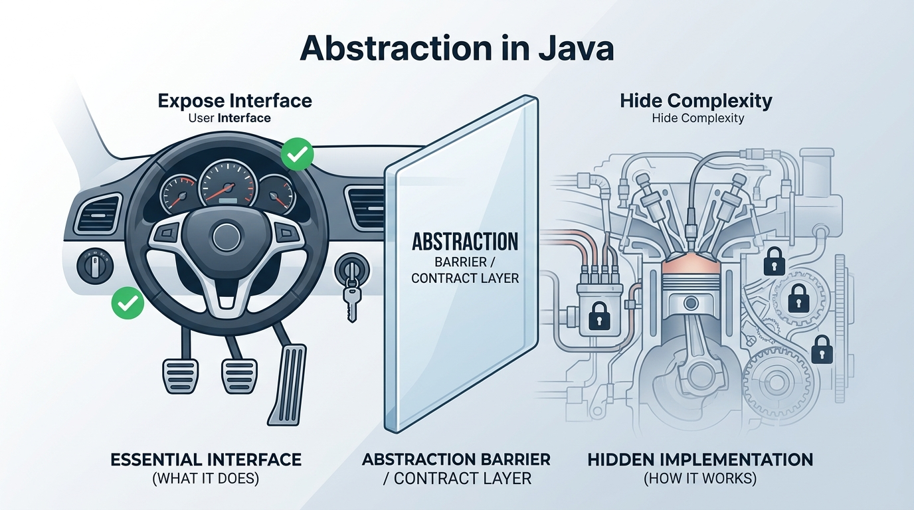

Master the foundational pillar of Object-Oriented Programming: hiding internal mechanics, exposing intuitive contracts, and decoupling client software from volatile implementations.
Abstraction is the process of hiding internal system complexity and showing only the essential, relevant features of an object to the outside world. In computer science, it answers the question "What does an object do?" while purposefully concealing "How does it do it?".
The clean, high-level set of operations exposed to consumers. Clients interact strictly via this predictable contract without worrying about background algorithms, data structures, or hardware states.
The intricate internal mechanics: database transactions, socket buffers, threading synchronization, or memory structures. These can be rewritten or upgraded anytime without breaking consumer code.
When you sit behind the wheel of a car, you press the gas pedal to accelerate, turn the steering wheel to change direction, and press the brake to stop. You do not need to calculate the fuel-injection ratio, spark-plug ignition timing, or gear torque ratios. The dashboard and pedals represent the Abstraction Layer; the engine and transmission represent the Internal Implementation.

When you insert your card and choose Withdraw $100, the screen gives you your cash. You are completely unaware whether the ATM connected via TCP/IP to an Oracle database, checked ledger balances via a gRPC microservice, or verified account limits across different bank clusters. You interacted solely with the abstraction: withdraw money.
Without abstraction, software systems would collapse under cognitive overload and architectural brittleness. Here is why every modern enterprise software relies on abstraction:
Developers using libraries like Spring, Hibernate, or the Java Collections Framework only need to know method signatures (e.g., list.add() or repo.save()). They do not need to memorize thousands of lines of low-level memory allocation code.
Clients depend on abstractions (interfaces or abstract classes), not concrete classes. You can swap an in-memory database with a PostgreSQL or MongoDB database without altering a single line in your business controller.
By hiding private fields and proprietary algorithms, unauthorized access and unintentional side-effects are prevented. External callers cannot tamper with internal flags or bypass safety checks.
Frontend and backend developers—or core platform and feature teams—agree upon an abstraction (contract) on Day 1. Both teams build against that contract simultaneously using mock implementations.
abstract class Vehicle defines what to do (start(), stop()).class Car extends Vehicle implements how to do.Vehicle without knowing ignition mechanics!
Students and engineers often confuse Abstraction and Encapsulation. While both serve data protection and clean architecture, their core focus and execution level are completely distinct:
| Aspect | Abstraction | Encapsulation |
|---|---|---|
| Core Question | "WHAT does the object do?" | "HOW does the object hide its data & bind it?" |
| Primary Focus | Hiding internal implementation and showing essential functionality. | Wrapping code and data together into a single unit (Data Hiding). |
| Design Level | High-level design & architectural contract phase. | Low-level implementation & class level. |
| Implementation in Java | Achieved via abstract class and interface. |
Achieved via private variables and public getters/setters. |
| Real-World Metaphor | The TV Remote control buttons (Power, Volume, Input). | The plastic shell and circuitry enclosing the remote's microchips and batteries. |
Toggle between the two perspectives below to experience how abstraction provides an elegant, simple surface while isolating heavy internal complexity:
Java provides two powerful language constructs to implement abstraction:
A class declared with the abstract keyword. It can contain both abstract methods (without body) and concrete methods (with body). It serves as a partial template where common code is shared, while specific behaviors are left to subclasses.
A pure contract declared with the interface keyword. Historically (prior to Java 8), it could ONLY declare method headers with zero implementation. Starting with Java 8/9, interfaces also support default, static, and private methods, yet remain the ultimate tool for defining loose behavioral contracts.
Notice how the Vehicle blueprint in the visual guide above defines what to do (start(), stop()), while Car provides how to do (internal engine firing). Explore the full code implementations below:
// Step 1: Define the Abstraction (Contract + Shared State)
abstract class PaymentGateway {
protected double amount;
// Constructor: Subclasses call this via super(amount)
public PaymentGateway(double amount) {
this.amount = amount;
}
// Abstract Method: WHAT to do (Subclass MUST provide the HOW)
abstract void processPayment();
// Concrete Method: Reusable shared logic across all payment gateways
public void printReceipt() {
System.out.println("Receipt generated successfully for: $" + amount);
}
}
// Step 2: Concrete Subclass 1 (NPCI UPI Integration)
class UpiPayment extends PaymentGateway {
private String upiId;
public UpiPayment(double amount, String upiId) {
super(amount);
this.upiId = upiId;
}
@Override
void processPayment() {
// Hidden mechanics: UPI PIN verification, NPCI switch connection
System.out.println("Routing payment of $" + amount + " via NPCI UPI ID: " + upiId);
}
}
// Step 3: Concrete Subclass 2 (Credit Card Integration)
class CardPayment extends PaymentGateway {
private String maskedCard;
public CardPayment(double amount, String maskedCard) {
super(amount);
this.maskedCard = maskedCard;
}
@Override
void processPayment() {
// Hidden mechanics: CVV check, 3D Secure OTP, Visa/Mastercard network
System.out.println("Routing payment of $" + amount + " via Card: " + maskedCard);
}
}PaymentGateway defines both abstract methods (processPayment()) and concrete reusable methods (printReceipt()), along with protected instance state (amount).
// Step 1: Define 100% Pure Contract via Interface
interface PaymentProcessor {
// Pure contract: Methods are implicitly 'public abstract'
void authorize(double amount);
boolean captureFunds();
}
// Step 2: Plug-and-Play Implementation 1
class StripeProcessor implements PaymentProcessor {
private double currentAmount;
@Override
public void authorize(double amount) {
this.currentAmount = amount;
System.out.println("Stripe: Pre-authorizing $" + amount + " on customer payment token.");
}
@Override
public boolean captureFunds() {
System.out.println("Stripe: Captured $" + currentAmount + " from bank vault.");
return true;
}
}
// Step 3: Plug-and-Play Implementation 2
class PayPalProcessor implements PaymentProcessor {
private double currentAmount;
@Override
public void authorize(double amount) {
this.currentAmount = amount;
System.out.println("PayPal: Validating customer wallet balance for $" + amount);
}
@Override
public boolean captureFunds() {
System.out.println("PayPal: Transferred $" + currentAmount + " via Express Checkout API.");
return true;
}
}public class AbstractionDemo {
public static void main(String[] args) {
System.out.println("=== 1. DEMO: ABSTRACT CLASS POLYMORPHISM ===");
// Client program talks ONLY to the abstraction (PaymentGateway)
PaymentGateway gateway1 = new UpiPayment(499.00, "user@okaxis");
gateway1.processPayment(); // Invokes UPI implementation
gateway1.printReceipt(); // Invokes inherited reusable implementation
PaymentGateway gateway2 = new CardPayment(1200.00, "XXXX-XXXX-XXXX-8921");
gateway2.processPayment(); // Invokes Card implementation
gateway2.printReceipt();
System.out.println("\n=== 2. DEMO: INTERFACE PURE ABSTRACTION ===");
// Polymorphic Interface contract reference:
PaymentProcessor processor = new StripeProcessor();
processor.authorize(750.00);
processor.captureFunds();
// Hot-swapping to PayPal without rewriting any calling logic:
processor = new PayPalProcessor();
processor.authorize(320.00);
processor.captureFunds();
}
}
/*
================================ CONSOLE OUTPUT ================================
=== 1. DEMO: ABSTRACT CLASS POLYMORPHISM ===
Routing payment of $499.0 via NPCI UPI ID: user@okaxis
Receipt generated successfully for: $499.0
Routing payment of $1200.0 via Card: XXXX-XXXX-XXXX-8921
Receipt generated successfully for: $1200.0
=== 2. DEMO: INTERFACE PURE ABSTRACTION ===
Stripe: Pre-authorizing $750.0 on customer payment token.
Stripe: Captured $750.0 from bank vault.
PayPal: Validating customer wallet balance for $320.0
PayPal: Transferred $320.0 via Express Checkout API.
================================================================================
*/main() never touches internal UPI cryptographic tokens or Stripe REST endpoints. The client code is 100% decoupled and completely immune to internal changes!
// Panel 5 of Infographic: Vehicle (Abstraction)
abstract class Vehicle {
// WHAT to do (no implementation details here)
abstract void start();
abstract void stop();
}
// Panel 5 of Infographic: Car (Concrete Implementation)
class Car extends Vehicle {
// HOW to do (implementation details)
@Override
void start() {
System.out.println("Car started: Spark plug ignited, fuel pump activated.");
}
@Override
void stop() {
System.out.println("Car stopped: Brake calipers pressed, fuel cut off.");
}
}
public class VehicleDemo {
public static void main(String[] args) {
// Driver only needs to know how to operate the Vehicle abstraction:
Vehicle myCar = new Car();
myCar.start();
myCar.stop();
}
}Q: Can you achieve 100% abstraction using an abstract class in Java?